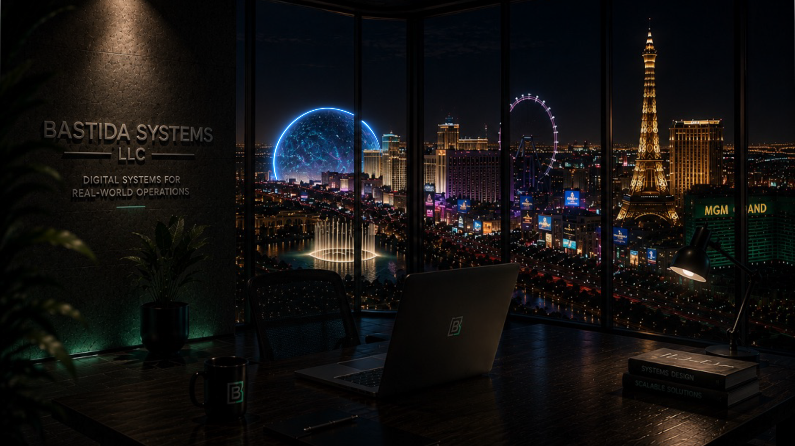

To design premium websites and practical systems that improve business presentation, operational visibility, reliability, and control.
About Bastida Systems
A website company with systems-level thinking.
Bastida Systems helps businesses look professional online first, then supports them with custom software, automation, dashboards, and operational tools when the business needs more than a website.

Bastida Systems designs professional websites and develops intelligent software platforms focused on monitoring, automation, and operational reliability. The company transforms complex business needs into clear digital experiences that improve visibility, trust, and control.
The current focus is website-first: premium landing pages, business websites, product pages, and digital presence for real companies. When the work requires deeper functionality, Bastida Systems also builds practical tools for existing systems and operational environments.
We do not seek to replace original systems unless a client specifically asks us to design, modernize, migrate, or build a replacement. Our goal is to support, extend, simplify, and make existing systems easier to use.
Our experience includes hospitality, casino, kitchen, environmental care, service, and industrial operations where manual processes, lack of traceability, and operational disorder can create losses, delays, and risk.
Through Bastida Systems, the company develops products such as FiltraCore, BEOFlow, LineOps, and La Apertura, combining design, technology, and business vision to build solutions with real value.
Mission and vision
Build digital tools that make businesses clearer, stronger, and easier to operate.
To help businesses move from scattered digital presence and manual operations into professional, scalable, data-aware digital ecosystems.
Start with clear presentation, then add the software, automation, dashboards, and workflows the business actually needs.
Leadership and operations
A multidisciplinary structure for design, software, operations, and business support.
Bastida Systems is supported by specialized areas including administration, software development, cybersecurity and safety compliance, marketing, legal, technology, security, and executive operations.
Manager of Administration.
Legal, Technology, Security, and Executive Operations.
Manager of Marketing and Advertising.
Interested in working with Bastida Systems?
Start with a website, a product page, or a custom system discussion. The first step is understanding the business goal and choosing the right scope.